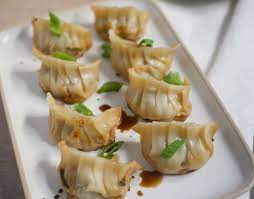

Gyozas

Description
Asian Dumplings
Ingredients filliing
- Minced pork/chicken
- Onion and garlic Fined diced
- Red capsicum Fined diced
- Spring onion Fined chopped
- Coriander Fined chopped
- Minth Fined chopped
- Green apple Fined diced
Dough
- Rice flour 50%
- wheat flour 50%
Way to do
- Mix all the filling together
- Make de dough let it rest one hour une towel
- Flat the dough as much as you can and roll into gyozas shape
- First you fried in th pan
- Add water cover untill cook
- Take the lid out untill crispy
Goes well with the creamy soy wasabi